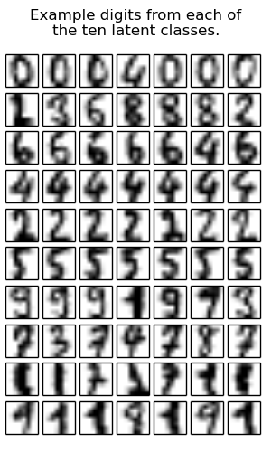

A Latent CRF with one node is the same as a latent multiclass SVM Using the latent variables, we can learn non-linear models. This is the same as a simple Latent SVM model. It would obviously be more effiencent to implement a special case for Latent SVMs so we don’t have to run an inference procedure.
This example uses the scikit-learn digit classification dataset, but poses the problem as a binary one, discriminating between even and odd digits.
Script output:
Training n-slack dual structural SVM
no additional constraints
LATENT SVM ITERATION 0
Training n-slack dual structural SVM
no additional constraints
objective converged.
LATENT SVM ITERATION 1
changes in H: 55
Training n-slack dual structural SVM
no additional constraints
objective converged.
Score with binary SVM:
Train: 0.92
Test: 0.92
Score with latent SVM:
Train: 1.00
Test: 0.98
Latent class counts: array([ 87, 103, 93, 79, 83, 94, 70, 19, 183, 88])
Python source code: plot_latent_svm_as_crf.py
import numpy as np
import matplotlib.pyplot as plt
from sklearn.cross_validation import train_test_split
from sklearn.datasets import load_digits
from pystruct.models import GraphCRF, LatentGraphCRF
from pystruct.learners import NSlackSSVM, LatentSSVM
# Load the scikit-learn digits classification dataset.
digits = load_digits()
X, y_org = digits.data, digits.target
X /= X.max()
# Make binary task by doing odd vs even numers.
y = y_org % 2
# Make each example into a tuple of a single feature vector and an empty edge
# list
X_ = [(np.atleast_2d(x), np.empty((0, 2), dtype=np.int)) for x in X]
Y = y.reshape(-1, 1)
X_train_, X_test_, X_train, X_test, y_train, y_test, y_org_train, y_org_test =\
train_test_split(X_, X, Y, y_org, test_size=.5)
# First, perform the equivalent of the usual SVM. This is represented as
# a CRF problem with no edges.
pbl = GraphCRF(inference_method='unary')
# We use batch_size=-1 as a binary problem can be solved in one go.
svm = NSlackSSVM(pbl, C=1, batch_size=-1)
svm.fit(X_train_, y_train)
# Now, use a latent-variabile CRF model with SVM training.
# 5 states per label is enough capacity to encode the 5 digit classes.
latent_pbl = LatentGraphCRF(n_states_per_label=5,
inference_method='unary')
base_ssvm = NSlackSSVM(latent_pbl, C=1, tol=.01,
inactive_threshold=1e-3, batch_size=10)
latent_svm = LatentSSVM(base_ssvm=base_ssvm, latent_iter=2)
latent_svm.fit(X_train_, y_train)
print("Score with binary SVM:")
print("Train: {:2.2f}".format(svm.score(X_train_, y_train)))
print("Test: {:2.2f}".format(svm.score(X_test_, y_test)))
print("Score with latent SVM:")
print("Train: {:2.2f}".format(latent_svm.score(X_train_, y_train)))
print("Test: {:2.2f}".format(latent_svm.score(X_test_, y_test)))
h_pred = np.hstack(latent_svm.predict_latent(X_test_))
print("Latent class counts: %s" % repr(np.bincount(h_pred)))
# plot first few digits from each latent class
plt.figure(figsize=(3, 5))
plt.suptitle("Example digits from each of\nthe ten latent classes.")
n_latent_classes = 10
n_examples = 7
for latent_class in xrange(n_latent_classes):
examples = X_test[h_pred == latent_class][:n_examples]
for k, example in enumerate(examples):
plt.subplot(n_latent_classes, n_examples,
1 + (n_examples * latent_class + k))
plt.imshow(example.reshape((8, 8)), cmap=plt.cm.gray_r)
plt.xticks(())
plt.yticks(())
plt.subplots_adjust(.02, .04, .96, .88, .12, .18)
plt.show()
Total running time of the example: 28.26 seconds